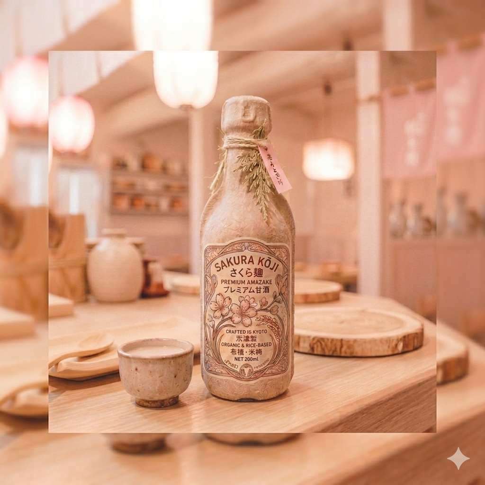
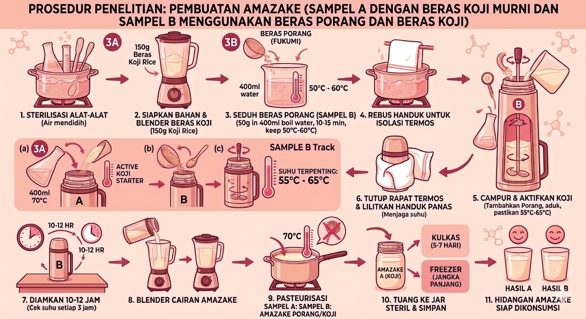
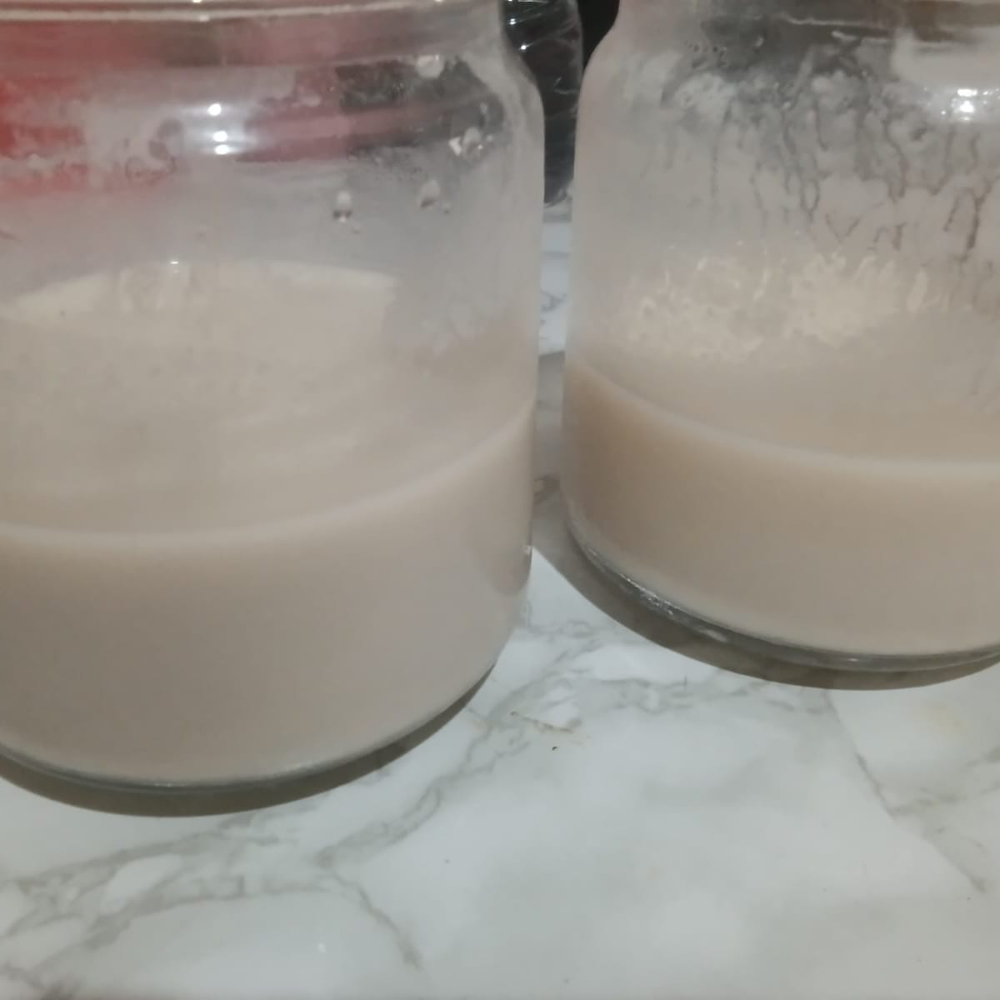

Amazake yang dibuat peneliti mencakup amazake yang menggunakan beras koji murni dan yang menggunakan beras koji dan beras porang. Sampel yang menggunakan beras koji murni disebut sampel A sedangkan sampel yang menggunakan beras koji dan beras porang disebut dengan sampel B. Hasil dari keduanya memiliki rasa dan warna yang berbeda dengan kepekatan karbohidrat yang juga sedikit berbeda saat diuji iodin oleh peneliti. Hasil dari sampel A adalah memiliki rasa yang relatif lebih asam daripada sampel B, warnanya lebih coklat, dan kepekatan karbohidratnya tidak sepekat sampel B. Hasil dari sampel B adalah memiliki rasa yang mengarah ke manis, warna yang lebih cerah, dan kepekatan karbohidrat yang sangat pekat.

